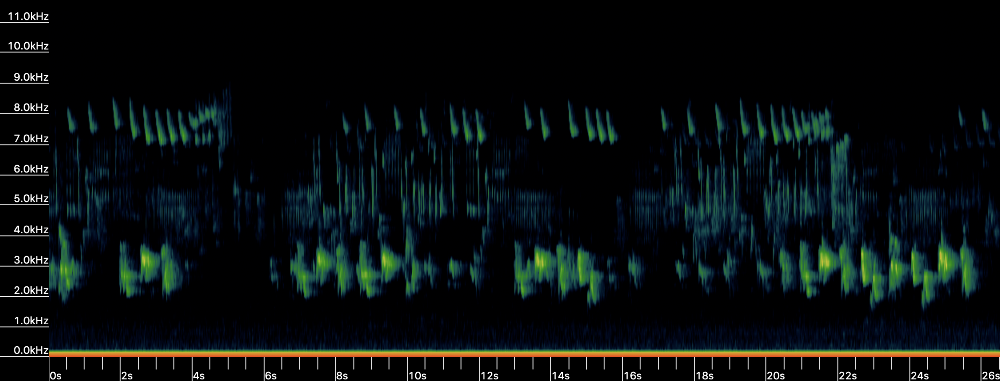
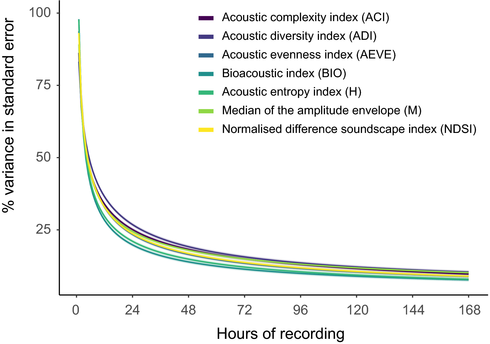
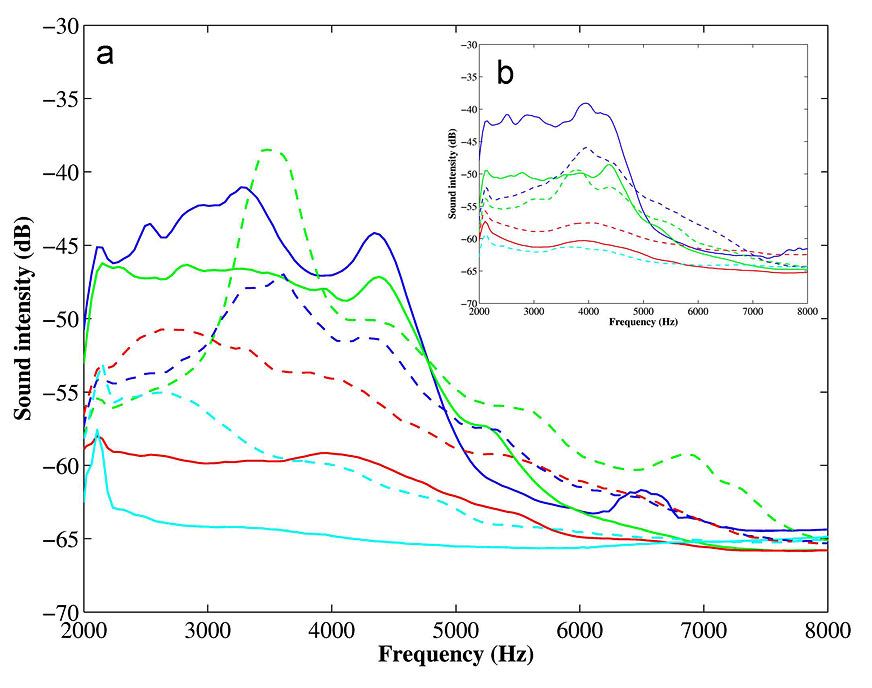
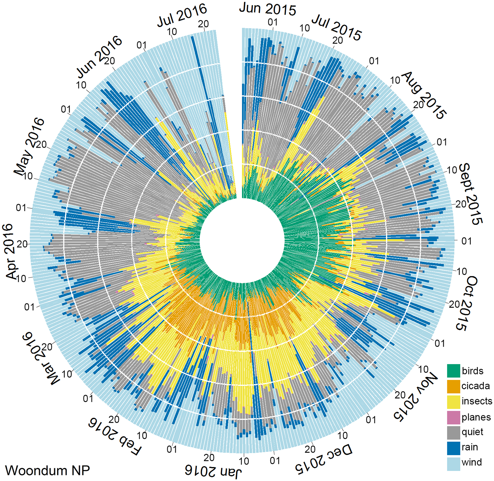

Assessing biodiversity with sound.

If a tree falls in the forest…
…and no one is around to hear it, does it make a sound? Yes, and if you had acoustic monitors deployed at the time, you could hear it! Soundscape ecology, the study of environmental sound, is a burgeoning field of research. By listening closely to the vocalizations and activity of wildlife, we can gain a unique perspective on the community composition and biodiversity of a place. We do this with passive acoustic monitoring, or in other words, by going out into the field to install a bunch of microphones and record days, months, or even years of audio data. And with increasingly cost-effective microphones and data storage becoming ubiquitous, there has never been a better time to get out there and record.
But, speaking of data storage, a full week of constant 24 hour recording can yield more than 50 GB of data (at 44.1 kHz). Considering that may be one site of many, those numbers will scale up fast. With more TB of data and hours of recordings than any human could possibly listen to in their lifetime, how can we efficiently reveal the secrets of our recordings, and understand the biodiversity of our study area?
Acoustic indices
One promising area of research is automated species-specific vocalization identification, often using machine learning-based classifiers. But these systems, while very powerful, are time and resource intensive to set up, as they are designed to examine each vocalization individually. This blog post explores another, more accessible option, that takes a step back and looks at what is happening to the soundscape as a whole. Enter: acoustic indices.
“An acoustic index is a statistic that summarizes some aspect of the structure and distribution of acoustic energy and information in an audio recording.” (Sueur 2018)
It attempts to put a number on the complexity of sound present in a recording. The idea behind this is that higher species richness in a given community will produce a greater range of acoustic signals, and thus exhibit a greater range of acoustic diversity. And if we can describe that diversity, we are describing a metric that is highly correlated with biodiversity.
Calculating an acoustic index reduces a recording into a set of numbers, which can then be used to make comparisons over time and between places. Because these numbers characterize the soundscape as a whole, they can provide a perspective on ecological integrity and change.
What are acoustic indices for?
Rapid, landscape-scale biodiversity assessment
Characterizing ecological integrity or wildness
Monitoring long-term change (disturbance, rewilding, biodiversity trajectories, etc)
But why use acoustic indices in particular, as opposed to other monitoring methods? Firstly, there is no need for individual species identification. This saves loads of time and effort. It also means this technique is applicable to taxa that we don’t know the sound of, or can’t identify very well. Second, we can characterize sound that includes geophony (wind, rain) and anthrophony (human noise), as well as biophony (wildlife vocalizations and activity).
Assumptions
There are some assumptions we need to consider when using acoustic indices to investigate a location. Fundamentally, most acoustic indices rely on the reasoning that as you have more species in a given area, they will produce a greater range of sound signals, resulting in a greater acoustic diversity. There are a few other particular assumptions at play:
1. Acoustic complexity relates to biological complexity
Acoustic complexity relates to biological complexity (richness, diversity, abundance). For example, is the complexity of birdsong a good proxy for bird species richness in your study area? What if you happen to have a community that have particularly diverse songs? How do you compare that with more monotonic communities? How do you cope with abiotic sounds (wind, rain, human noise)? Note that the terrain of habitats themselves can constrain the range of sound that animals make. For example, coastal birds live in open spaces where high-pitched sound carries well. Primary forests exhibit different soundscapes, where lower-pitched or complex songs may carry better.
2. Acoustic space is a resource that organisms compete for
Acoustic space is a resource that organisms compete for, similar to food, water, or shelter. This is also known as the “acoustic niche hypothesis”, and suggests that acoustic interference leads to resource partitioning (calling at different pitches and times), and even direct competition (one species can mask another one, invasive species may come in and take over an existing niche and reduce calls of another species). (Krause 1993)
3. Your recordings reflect a significant portion of the local biodiversity
The acoustic community you recorded reflects a significant portion of the local biodiversity of interest. Have you left your recorders out for long enough to actually be able to characterize the soundscape comprehensively? Are you missing something important because you didn’t record at the right times or day, or for a long enough number of days? How much data do you need to see consistent results that capture the majority of the soundscape? These numbers can change depending on the place. These factors need to be considered when designing a deployment schedule for recorders. What about soundscapes where there may be important elements of biodiversity that don’t even make sounds? Is it always reasonable to use a sound-based approach? That’s a decision you need to make when considering using acoustic indices.

How do acoustic indices work?
Different acoustic indices combine different elements of sound and different statistical methods to measure complexity. They typically use:
Sound intensity (in dB)
Presence/absence of sound in a frequency band
Power spectrum
With these measures, the indices then apply established statitstical methods, such as the Shannon biodiversity index or the Gini inequality index. More than 60 different indices have been devised so far, but lets look at some of the most commonly used ones.
Bioacoustic index
Developed by Boelman and team to estimate relative bird abundance in Hawaii. They wanted to look at how non-native plant species invasion affected birds, so they developed this acoustic index and validated it against traditional ornithological surveys that directly measured birds, species, composition, and abundance.

The bioacoustic index measures the area under the log amplitude spectrum curve in dB by kHz with the maximum dB level set to zero. The blue line is for dawn recordings at a forest site. They chose a range in this example from 2-8kHz because that’s the range of the birds that are singing. The area under the curve is the bioacoustic index. At other sites (different colors), the area under the curve is different. A is for the dawn chorus, and B is midday. Forest sites are blue, woodland green, savannah in red. They found that the bioacoustic index did correlate well with bird abundance overall.
Normalized Difference Soundscape Index
NDSI quantifies disturbance based on the ratio of biotic to anthropogenic sound in recordings. It also uses the area under the curve, but divides the power spectrum into two parts (anthrophony, typically 1-2kHz vs biophony, often 2-8kHz). Kasten and team had a big library of acoustic data and used it to develop the NDSI for efficient analysis.
\(NDSI = (biophony - anthrophony) / (biophony + anthrophony)\)
Values tending to -1 indicate more anthrophony, while values tending to +1 indicate more biophony. It’s important to understand that there are limitations due to the strict reliance on frequency bin division, but these can be tuned to improve results based on your study site (Gage & Axel 2014).
Acoustic Diversity and Acoustic Evenness
These two related indices look at occupancy of frequency bins and then apply either the Shannon index for diversity or Gini index for evenness (Pjanowski et al 2011, Villanueva-River et al 2011). They tend to yield inverse results of each other. Both start by dividing the frequency range into different bands, then determine ‘occupancy’ by looking for sounds that are loud enough to pass some threshold. The resulting proportion of active or “occupied” sound in those bands indicate levels of activity.
The ADI uses the Shannon to output from zero to the natural log of the number of kHz bins. Larger values indicate more even activity among frequency bins (either noisy across all frequency bands or completely silent), while values closer to zero indicate increasingly narrow or purse tones (i.e. all energy in one frequency band).
Acoustic Complexity Index
ACI works in a similar way, but is a bit more complicated (it lives up to its name). This is one of the most widely used indices for measuring biodiversity. It arose from an observation by Pieretti and team that many biotic sounds, like birdsong, are characterized by an intrinsic variability of intensities, while many types of anthropogenic noise (like cars or airplanes passing) exhibit consistent intensity values. It was originally designed to measure the typical complexity of bird songs in a soundscape, despite the presence of persistent human-generated noise. It quantifies irregularity in sound, and assumes that this is correlated with bird song activity.
It is based on the difference in amplitude between one time sample and the next within a frequency band, relative to the total amplitude (Bradfer-Lawrence et al 2019). A recording is divided into a grid, an “ACI matrix”, that is made up of time sample rows and frequency band columns. ACI compares the sound intensity in each little grid square with the next one. When using ACI, you need to consider what time period and frequency bands are biologically meaningful for your survey.
ACI also requires you to specify a time step J, which is a length of time made up of a number of time samples. Number of time samples in each time step J = total number time samples / J. J thus has to do with the level of detail and amount of “smoothing” the ACI does - the more J steps there are, the larger the ACI value will be.
As it’s designed to quantify the inherent irregularity in biophony, it is relatively impervious to persistent sounds of constant intensity. Note that those persistent sounds could be biophonic, and insect drones are particularly prone to this. Pieretti found a significant correlation between ACI values and the number of bird vocalizations. That relationship was weaker with other acoustic indices due to interference from the airplane noise.
Putting acoustic indices to use
Several packages have been developed to streamline the calculation of acoustic indices. Perhaps the most widely used are the Seewave and SoundEcology packages for R. There are other options that don’t require coding, however: the Arbimon Rainforest Connection website, and interactive computer applications like Wildlife Acoustics’ Kaleidoscope
Monitoring soundscapes over time
Acoustic indices give us a way to visualize soundscapes using massive databases of recordings to look at change over time.

This figure shows how the soundscape of a national park in Australia changes over the course of a year. Each color represents a proportion of sounds in a certain category - birds, insects, planes, rain, etc. Phillips and team made continuous recordings at a single site for 13 months (yielding ~3 TB of data). They then divided the recordings into 1 min files and calculated 12 acoustic indices for each file. The indices were then clustered to create characteristic acoustic classes which correspond to the color categories.
This illustrates how acoustic indices are often not used on their own, but to inform clustering or multivariate analysis that can tell a more detailed story of what is going on over time. We can learn so much if we only take the time to stop and listen!
References
Sueur, J. (2018). Sound Analysis and Synthesis with R. Springer eBook. https://doi.org/10.1007/978-3-319-77647-7
Krause, Bernie. (1993). The Niche Hypothesis: A virtual symphony of animal sounds, the origins of musical expression and the health of habitats. Soundscape Newsletter (World Forum for Acoustic Ecology).
Bradfer-Lawrence, T., Gardner, N., Bunnefeld, L., Bunnefeld, N., Willis, S.G. & Dent, D.H. (2019) Guidelines for the use of acoustic indices in environmental research. Methods Ecol Evol, 10, 1796-1807. https ://doi.org/10.1111/2041- 210X.13254
Boelman, N., Asner, G., Hart, P. & Martin, R. (2007). Multi-trophic invasion resistance in Hawaii: Bioacoustics, field surveys, and airborne remote sensing. Ecological Applications, 17, 2137–2144. https ://doi. org/10.1890/07-0004.1
Kasten, E., Gage, S., Fox, J. & Joo, W. (2012). The remote environmental assessment laboratory’s acoustic library: An archive for studying soundscape ecology. Ecological Informatics, 12, 50–67. https ://doi.org/10.1016/j.ecoinf.2012.08.001
Gage, S. & Axel, A. (2014). Visualization of temporal change in soundscape power of a Michigan lake habitat over a 4-year period. Ecological Informatics 21 (2014) 100–109
Pijanowski, B. C., Villanueva-Rivera, L. J., Dumyahn, S. L., Farina, A., Krause, B. L., Napoletano, B. M., & Pieretti, N. (2011). Soundscape ecology: The science of sound in the landscape. BioScience, 61, 203–216. https ://doi.org/10.1525/bio.2011.61.3.6
Villanueva-Rivera, L., Pijanowski, B., Doucette, J., & Pekin, B. (2011). A primer of acoustic analysis for landscape ecologists. Landscape Ecology, 26, 1233–1246. https ://doi.org/10.1007/s10980-011-9636-9
Phillips, YF., Towsey, M. and Roe, P. (2018) Revealing the ecological content of long duration audio-recordings of the environment through clustering and visualisation. PLoS ONE 13(3): e0193345. https://doi.org/10.1371/journal.pone.0193345
Pieretti, N., Farina, A. & Morri, D. (2011). A new methodology to infer the singing activity of an avian community: The Acoustic Complexity Index (ACI). Ecological Indicators, 11, 868– 873. https :// doi.org/10.1016/j.ecoli nd.2010.11.005
Tattersall, F, Howden-Leach, P. Introduction to Acoustic Indices for Biodiversity Monitoring. Wildlife Acoustics webinar, February 2023.